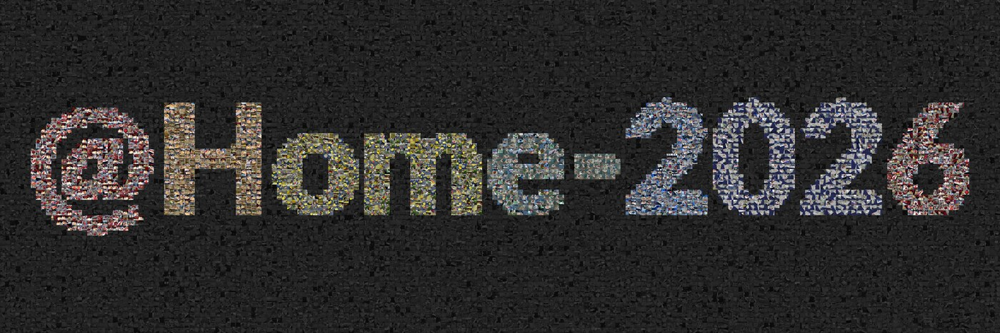
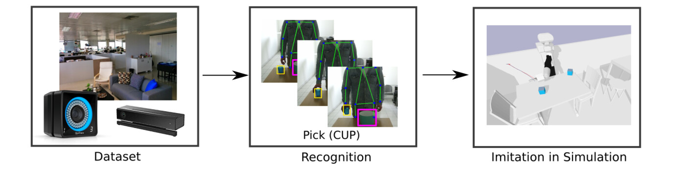
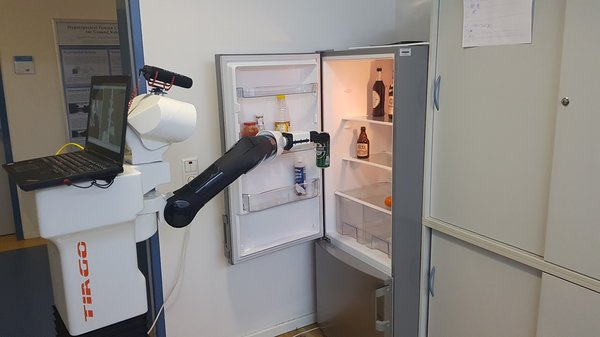
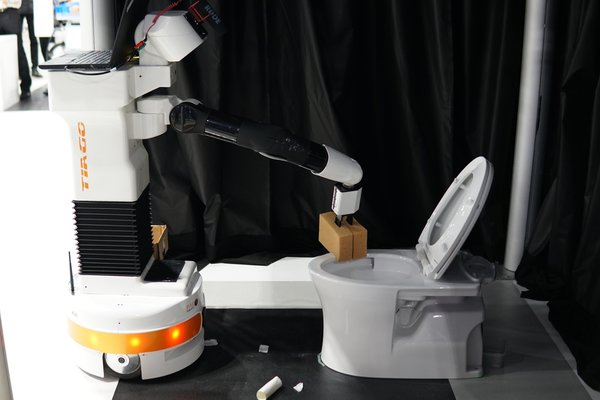
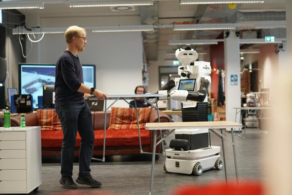
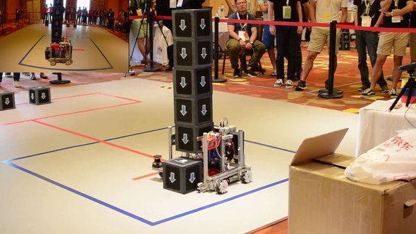
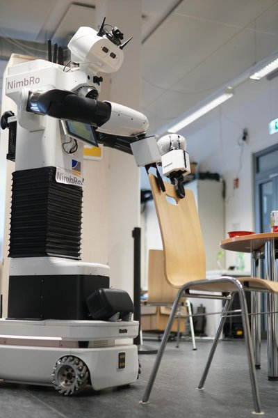

Recognizing and segmenting human actions in time-series data such as videos, inertial measurements, Wi-Fi CSI fingerprints, and skeleton sequences, so that robots understand and respond to human activities robustly and naturally.
SL-DML (ICPR 2020) · Gimme Signals (IROS 2020) · Skeleton-DML (WACV 2022)
Enabling robots to acquire new skills from human demonstrations and multi-modal observations rather than explicit programming, so that non-experts can teach robots new tasks.
Simitate (IROS 2019) · Robotic Imitation by Markerless Visual Observation (ICARSC 2020)
Building complete domestic service robots that combine perception, task planning, mobile manipulation, and human-robot interaction, validated in international competitions such as RoboCup@Home and the ANA Avatar XPRIZE as real-world benchmarks.
Adaptive Domestic Service Robotics (GRC 2026) · RoboCup@Home 2024 OPL Winner NimbRo (RoboCup 2024)

A Multi-Venue Dataset for Household Object Instance Segmentation at RoboCup@Home
A collection of 61 household-object instance-segmentation datasets in COCO format, self-captured with domestic service robots at RoboCup@Home competition venues and the home lab. Data from 8 sources (Bonn, Bordeaux, Cologne, Eindhoven, Incheon, Kassel, Nürnberg, Salvador) is unified into one release with a single canonical label space.

A Hybrid Imitation Learning Benchmark
A benchmarking suite for imitation learning containing 1938 RGB-D sequences of humans performing daily activities in a realistic environment, with ground-truth 6 DOF hand and object poses and a coupled simulation for evaluating effect and trajectory quality.
Reviewer for KI (2026), IROS (2020–2026), ICRA (2019–2026), RO-MAN (2019–2024), RA-L (2019–2026), IEEE SPL (2023), IJCV (2023), Humanoids (2023–2024), SII (2024), THRI (2024), Avatar Workshop (2023–2024).




